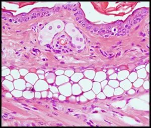

Secuencia ordenada de estados celulares desde progenitores multipotentes hasta condrocitos maduros
1
Neuroectodérmico
Plasticidad celular y actividad basal de factores generales
2
Condensación Mesenquimal
Migración y agregación en nódulos precondrogénicos
3
Diferenciación a Condroblastos
Redondeo celular e inicio de síntesis masiva de matriz
4
Proliferación Condrocítica
Actividad biosintética máxima y producción de matriz
5
Maduración / Hipertrofia
Detención del ciclo celular y aumento de volumen

Cambios Clave
Morfología celular
Reorganización de matriz extracelular
Reprogramación transcripcional
Dinámica temporal y cooperación entre factores transcripcionales determinan el progreso y estabilidad del destino condrogénico